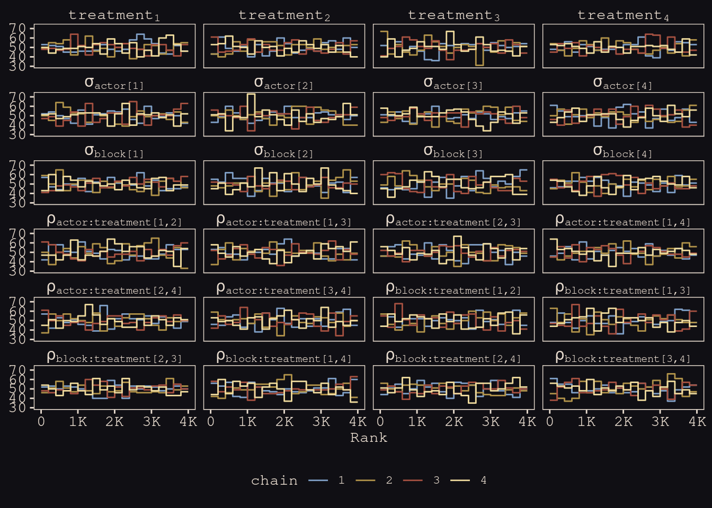

13.2 Advanced varying slopes
![Grown up version of this. Many effects, many types of clusters. Back to the chimp data. Four treatments. Trying to estimate theaverage behaviour in each of these treatments. Howw often the left lever is pulled can vary by treatment. TID is treatment IDs 1 to 4, and for ecah there's an avergae rate of pulling the leve. BUt each chimp and blcok has a deviation from that mean. Alpha sub actor i, TID[i] measn the alpha deviation from the mean in this treatment, for actor[i]. Each actor gets four parameters. 7 actors. 7 x 4 parameters. RThen beta parameters for the block effects - deviations for the gamma means for each block. 4 parameters, times 6 blocks. Want to do some shrinkage. Rawest empirical descrption for this dataset yet. For eery little box, that has a unique idnetity, there's a uknique treatment and blocka dn actor that has its own deviation. But we'll need to do some shrinkage to deal with overfitting.](slides/L17/39.png)
Grown up version of this. Many effects, many types of clusters. Back to the chimp data. Four treatments. Trying to estimate theaverage behaviour in each of these treatments. Howw often the left lever is pulled can vary by treatment. TID is treatment IDs 1 to 4, and for ecah there’s an avergae rate of pulling the leve. BUt each chimp and blcok has a deviation from that mean. Alpha sub actor i, TID[i] measn the alpha deviation from the mean in this treatment, for actor[i]. Each actor gets four parameters. 7 actors. 7 x 4 parameters. RThen beta parameters for the block effects - deviations for the gamma means for each block. 4 parameters, times 6 blocks. Want to do some shrinkage. Rawest empirical descrption for this dataset yet. For eery little box, that has a unique idnetity, there’s a uknique treatment and blocka dn actor that has its own deviation. But we’ll need to do some shrinkage to deal with overfitting.
data(chimpanzees, package = "rethinking")
d <- chimpanzees
rm(chimpanzees)
# wrangle
d <-
d %>%
mutate(actor = factor(actor),
block = factor(block),
treatment = factor(1 + prosoc_left + 2 * condition),
# this will come in handy, later
labels = factor(treatment,
levels = 1:4,
labels = c("r/n", "l/n", "r/p", "l/p")))
glimpse(d)## Rows: 504
## Columns: 10
## $ actor <fct> 1, 1, 1, 1, 1, 1, 1, 1, 1, 1, 1, 1, 1, 1, 1, 1, 1, 1, 1, …
## $ recipient <int> NA, NA, NA, NA, NA, NA, NA, NA, NA, NA, NA, NA, NA, NA, N…
## $ condition <int> 0, 0, 0, 0, 0, 0, 0, 0, 0, 0, 0, 0, 0, 0, 0, 0, 0, 0, 0, …
## $ block <fct> 1, 1, 1, 1, 1, 1, 2, 2, 2, 2, 2, 2, 3, 3, 3, 3, 3, 3, 4, …
## $ trial <int> 2, 4, 6, 8, 10, 12, 14, 16, 18, 20, 22, 24, 26, 28, 30, 3…
## $ prosoc_left <int> 0, 0, 1, 0, 1, 1, 1, 1, 0, 0, 0, 1, 0, 1, 0, 1, 1, 0, 1, …
## $ chose_prosoc <int> 1, 0, 0, 1, 1, 1, 0, 0, 1, 1, 0, 0, 0, 1, 1, 1, 0, 1, 1, …
## $ pulled_left <int> 0, 1, 0, 0, 1, 1, 0, 0, 0, 0, 1, 0, 1, 1, 0, 1, 0, 0, 1, …
## $ treatment <fct> 1, 1, 2, 1, 2, 2, 2, 2, 1, 1, 1, 2, 1, 2, 1, 2, 2, 1, 2, …
## $ labels <fct> r/n, r/n, l/n, r/n, l/n, l/n, l/n, l/n, r/n, r/n, r/n, l/…One matrix for each cluster type. So 28 actors, 24 blocks. Means are all 0. Then the covariance matrix.
Actor effects in red. Think of alphas as a matrix, with each row as an actor, and each column as a treatment. Then we define it down int he adaptive priors. vector[4] defines the matrix. 4 things minus the numbers of actors. Then there’s this multi_normal. Multiplies the 4. sigma_actor and Rho_actor.
![Now we have a matrix of betas. Row for each block, column for each treatment. The different treatment effects hav ea correlation across actors and blocks. What doe sthat mean? It's handedness. Actor number 2 always pulls the left. THe correlation among treatment effects is high. Really strong correlations, arising from handedness. With these models, part of learning is to run these, and then make the priors stronger. Try 64, 128. And see what happens to the posterior. Since you can't plot a 4D matrix.](slides/L17/43.png)
Now we have a matrix of betas. Row for each block, column for each treatment. The different treatment effects hav ea correlation across actors and blocks. What doe sthat mean? It’s handedness. Actor number 2 always pulls the left. THe correlation among treatment effects is high. Really strong correlations, arising from handedness. With these models, part of learning is to run these, and then make the priors stronger. Try 64, 128. And see what happens to the posterior. Since you can’t plot a 4D matrix.
One of my favourite topics. The rollercoaster really pops off the rail with these.
To do a non-cetnered parameterisation, you factor all of the parameters out of the prior, into the linear model. For a 1D normal that’s easy, because you can take hte mean and sigma out. But now we have a whole matrix. Sigmas aren’t a problem, but still have a correlation matrix as a prior. Answer courtesy fo this guy. Figured out a cool trick to figure out a system of equations.

Cholesky factor or decomposition is a workhorse. Artillery officer in WWI. Died in the war, but his colleagues had rescued his notes, where he had solved linear equations by solving fewer than you started with.
![Why do we care? We've got this correlation matrix, and we need to somehow blend it with a vector of z scores. This is the non-centered prior business - you have independent z-scores, and blend them with a correaltion matrix to get things back on the right scale. This is what his technqiue lets us do. Imagine you wanted to simulated two vectors with a particular correlations. You could simulate independent random numbers. And you want their correlation to be 0.6. `z1` is just a bunch of z scores, like `z2`. Then we can get `a1` as a funtion by multiplying by sigma to put it on the normal scale. The last things is the Cholesky factor. This works for any size matrix. We'll pick up the rest in the next lecture.](slides/L17/47.png)
Why do we care? We’ve got this correlation matrix, and we need to somehow blend it with a vector of z scores. This is the non-centered prior business - you have independent z-scores, and blend them with a correaltion matrix to get things back on the right scale. This is what his technqiue lets us do. Imagine you wanted to simulated two vectors with a particular correlations. You could simulate independent random numbers. And you want their correlation to be 0.6. z1 is just a bunch of z scores, like z2. Then we can get a1 as a funtion by multiplying by sigma to put it on the normal scale. The last things is the Cholesky factor. This works for any size matrix. We’ll pick up the rest in the next lecture.
b14.3 <-
brm(data = d,
family = binomial,
pulled_left | trials(1) ~ 0 + treatment + (0 + treatment | actor) + (0 + treatment | block),
prior = c(prior(normal(0, 1), class = b),
prior(exponential(1), class = sd, group = actor),
prior(exponential(1), class = sd, group = block),
prior(lkj(2), class = cor, group = actor),
prior(lkj(2), class = cor, group = block)),
iter = 2000, warmup = 1000, chains = 4, cores = 4,
seed = 4387510,
file = "fits/b14.03")Check out the trank plot:
# give the parameters fancy names
names <-
c(str_c("treatment[", 1:4, "]"),
str_c("sigma['actor[", 1:4, "]']"),
str_c("sigma['block[", 1:4, "]']"),
str_c("rho['actor:treatment[", c(1, 1:2, 1:3), ",", rep(2:4, times = 1:3), "]']"),
str_c("rho['block:treatment[", c(1, 1:2, 1:3), ",", rep(2:4, times = 1:3), "]']"),
"chain")
# wrangle
posterior_samples(b14.3, add_chain = T) %>%
dplyr::select(b_treatment1:`cor_block__treatment3__treatment4`, chain) %>%
set_names(names) %>%
# plot
mcmc_rank_overlay() +
scale_color_manual(values = c("#80A0C7", "#B1934A", "#A65141", "#EEDA9D")) +
scale_x_continuous(breaks = 0:4 * 1e3, labels = c(0, str_c(1:4, "K"))) +
coord_cartesian(ylim = c(30, NA)) +
theme(legend.position = "bottom") +
facet_wrap(~ parameter, labeller = label_parsed, ncol = 4)## Scale for 'colour' is already present. Adding another scale for 'colour',
## which will replace the existing scale.
library(posterior)## This is posterior version 1.0.1##
## Attaching package: 'posterior'## The following object is masked from 'package:brms':
##
## rhat## The following object is masked from 'package:bayesplot':
##
## rhat## The following objects are masked from 'package:rstan':
##
## ess_bulk, ess_tail## The following objects are masked from 'package:stats':
##
## mad, sd, varposterior_samples(b14.3) %>%
summarise_draws() %>%
pivot_longer(starts_with("ess")) %>%
ggplot(aes(x = value)) +
geom_histogram(binwidth = 250, fill = "#EEDA9D", color = "#DCA258") +
xlim(0, NA) +
facet_wrap(~ name)## Warning: Removed 2 rows containing missing values (geom_bar).
print(b14.3)## Family: binomial
## Links: mu = logit
## Formula: pulled_left | trials(1) ~ 0 + treatment + (0 + treatment | actor) + (0 + treatment | block)
## Data: d (Number of observations: 504)
## Samples: 4 chains, each with iter = 2000; warmup = 1000; thin = 1;
## total post-warmup samples = 4000
##
## Group-Level Effects:
## ~actor (Number of levels: 7)
## Estimate Est.Error l-95% CI u-95% CI Rhat Bulk_ESS
## sd(treatment1) 1.40 0.50 0.69 2.64 1.00 2180
## sd(treatment2) 0.91 0.41 0.33 1.91 1.00 2810
## sd(treatment3) 1.84 0.55 1.03 3.15 1.00 3534
## sd(treatment4) 1.56 0.59 0.73 3.01 1.00 3092
## cor(treatment1,treatment2) 0.42 0.28 -0.22 0.87 1.00 3004
## cor(treatment1,treatment3) 0.52 0.25 -0.06 0.89 1.00 2874
## cor(treatment2,treatment3) 0.49 0.26 -0.10 0.89 1.00 3276
## cor(treatment1,treatment4) 0.44 0.26 -0.14 0.87 1.00 3030
## cor(treatment2,treatment4) 0.44 0.28 -0.19 0.88 1.00 3560
## cor(treatment3,treatment4) 0.58 0.24 0.01 0.92 1.00 3481
## Tail_ESS
## sd(treatment1) 2417
## sd(treatment2) 2411
## sd(treatment3) 3178
## sd(treatment4) 2254
## cor(treatment1,treatment2) 3131
## cor(treatment1,treatment3) 2709
## cor(treatment2,treatment3) 3535
## cor(treatment1,treatment4) 2697
## cor(treatment2,treatment4) 3247
## cor(treatment3,treatment4) 2826
##
## ~block (Number of levels: 6)
## Estimate Est.Error l-95% CI u-95% CI Rhat Bulk_ESS
## sd(treatment1) 0.42 0.34 0.01 1.26 1.00 2235
## sd(treatment2) 0.43 0.35 0.02 1.29 1.00 1901
## sd(treatment3) 0.30 0.27 0.01 0.99 1.00 2864
## sd(treatment4) 0.47 0.38 0.02 1.41 1.00 2116
## cor(treatment1,treatment2) -0.07 0.37 -0.74 0.64 1.00 5342
## cor(treatment1,treatment3) -0.02 0.38 -0.72 0.71 1.00 8111
## cor(treatment2,treatment3) -0.02 0.38 -0.72 0.69 1.00 5309
## cor(treatment1,treatment4) 0.05 0.37 -0.68 0.72 1.00 4579
## cor(treatment2,treatment4) 0.05 0.38 -0.66 0.73 1.00 4518
## cor(treatment3,treatment4) 0.02 0.38 -0.67 0.72 1.00 3951
## Tail_ESS
## sd(treatment1) 2066
## sd(treatment2) 2460
## sd(treatment3) 1930
## sd(treatment4) 2359
## cor(treatment1,treatment2) 3066
## cor(treatment1,treatment3) 2730
## cor(treatment2,treatment3) 2914
## cor(treatment1,treatment4) 2891
## cor(treatment2,treatment4) 3276
## cor(treatment3,treatment4) 3405
##
## Population-Level Effects:
## Estimate Est.Error l-95% CI u-95% CI Rhat Bulk_ESS Tail_ESS
## treatment1 0.22 0.52 -0.80 1.27 1.00 2221 2356
## treatment2 0.64 0.40 -0.17 1.43 1.00 2906 2486
## treatment3 -0.02 0.57 -1.16 1.09 1.00 3243 3001
## treatment4 0.66 0.54 -0.40 1.73 1.00 3365 2678
##
## Samples were drawn using sampling(NUTS). For each parameter, Bulk_ESS
## and Tail_ESS are effective sample size measures, and Rhat is the potential
## scale reduction factor on split chains (at convergence, Rhat = 1).Compute the WAIC estimate:
b14.3 <- add_criterion(b14.3, "waic")
waic(b14.3)##
## Computed from 4000 by 504 log-likelihood matrix
##
## Estimate SE
## elpd_waic -272.5 9.8
## p_waic 27.0 1.4
## waic 545.1 19.7
##
## 1 (0.2%) p_waic estimates greater than 0.4. We recommend trying loo instead.
# for annotation
text <-
distinct(d, labels) %>%
mutate(actor = 1,
prop = c(.07, .8, .08, .795))
nd <-
d %>%
distinct(actor, condition, labels, prosoc_left, treatment) %>%
mutate(block = 5)
# compute and wrangle the posterior predictions
fitted(b14.3,
newdata = nd) %>%
data.frame() %>%
bind_cols(nd) %>%
# add the empirical proportions
left_join(
d %>%
group_by(actor, treatment) %>%
mutate(proportion = mean(pulled_left)) %>%
distinct(actor, treatment, proportion),
by = c("actor", "treatment")
) %>%
mutate(condition = factor(condition)) %>%
# plot!
ggplot(aes(x = labels)) +
geom_hline(yintercept = .5, color = "#E8DCCF", alpha = 1/2, linetype = 2) +
# empirical proportions
geom_line(aes(y = proportion, group = prosoc_left),
size = 1/4, color = "#394165") +
geom_point(aes(y = proportion, shape = condition),
color = "#394165", fill = "#100F14", size = 2.5, show.legend = F) +
# posterior predictions
geom_line(aes(y = Estimate, group = prosoc_left),
size = 3/4, color = "#80A0C7") +
geom_pointrange(aes(y = Estimate, ymin = Q2.5, ymax = Q97.5, shape = condition),
color = "#80A0C7", fill = "#100F14", fatten = 8, size = 1/3, show.legend = F) +
# annotation for the conditions
geom_text(data = text,
aes(y = prop, label = labels),
color = "#DCA258", family = "Courier", size = 3) +
scale_shape_manual(values = c(21, 19)) +
scale_x_discrete(NULL, breaks = NULL) +
scale_y_continuous("proportion left lever", breaks = 0:2 / 2, labels = c("0", ".5", "1")) +
labs(subtitle = "Posterior predictions, in light blue, against the raw data, in dark blue, for\nmodel b14.3, the cross-classified varying effects model.") +
facet_wrap(~ actor, nrow = 1, labeller = label_both)
slides_dir = here::here("docs/slides/L18")![We had specified this complicated random model. Now trying to show you non-centering reparameterising when you have random slopes. French guy called Cholesky figured out this cool technique. Way to take a bunch of uncorrelated values and give them any correlation you want. Here it's not what you want, it's the one the data wants. To get a non-cetnerd parameterisation, we nee the prior not to be conditonal on other parameters. For some datasets and models, some centering is better. You need to be flexible.](slides/L18/02.png)
We had specified this complicated random model. Now trying to show you non-centering reparameterising when you have random slopes. French guy called Cholesky figured out this cool technique. Way to take a bunch of uncorrelated values and give them any correlation you want. Here it’s not what you want, it’s the one the data wants. To get a non-cetnerd parameterisation, we nee the prior not to be conditonal on other parameters. For some datasets and models, some centering is better. You need to be flexible.
![In red all the bits that have to do with actor effects. Parameter for each actor and treatment, doing it with shrinkage and pooling. That's what this `alpha[actor,tid]` is. Green is the analagous block effects. Column is again a treatment. So what's the average treatment on that day? Need to check for block effects. What we're doing here is almost exactly Stan code. What you want to see is that we're creating the matrix. Defined by `compose_noncentered`. Multiply them by the z-score gives us the right scale again. Last bit down the bottom, now it doesn't contain a correlation matrix, it's a cholesky factor.](slides/L18/03.png)
In red all the bits that have to do with actor effects. Parameter for each actor and treatment, doing it with shrinkage and pooling. That’s what this alpha[actor,tid] is. Green is the analagous block effects. Column is again a treatment. So what’s the average treatment on that day? Need to check for block effects. What we’re doing here is almost exactly Stan code. What you want to see is that we’re creating the matrix. Defined by compose_noncentered. Multiply them by the z-score gives us the right scale again. Last bit down the bottom, now it doesn’t contain a correlation matrix, it’s a cholesky factor.

![What you get from this is really amazing. They produce the same inferences, but some do them more effectively than others. Each point is a parameter in the posterior distribution. The horizontal axis is the number of effective samples from the centered model, that looks how the way we talk about MLMs. The vertical si the corresponding number of effective samples. So sometimes there are more than double the number of effective samples. This is not unqiue to Hamiltonian Monte Carlo, but the difference is that it tells you.](slides/L18/05.png)
What you get from this is really amazing. They produce the same inferences, but some do them more effectively than others. Each point is a parameter in the posterior distribution. The horizontal axis is the number of effective samples from the centered model, that looks how the way we talk about MLMs. The vertical si the corresponding number of effective samples. So sometimes there are more than double the number of effective samples. This is not unqiue to Hamiltonian Monte Carlo, but the difference is that it tells you.
![Why are we doing this? We care about inference. Just the standard deviations from the random effects. For now, what do we learn from the SDs? They generate the stregth of pooling. The amount of variation is learned, and these are embodying that learning or information. The first four are actor effects that correspond to treatment factors. 1 was prosocial option on the right, and no partner present. 2 was prosocial left, no partner. 3 was prosocial right, parter, 4 prosocial left, partner present. And there's a lot less variation in treatment 2. The blocks are pretty much all the same. So it does more shrinkage than on actors, because the actors are diffferent due to handedlness.](slides/L18/06.png)
Why are we doing this? We care about inference. Just the standard deviations from the random effects. For now, what do we learn from the SDs? They generate the stregth of pooling. The amount of variation is learned, and these are embodying that learning or information. The first four are actor effects that correspond to treatment factors. 1 was prosocial option on the right, and no partner present. 2 was prosocial left, no partner. 3 was prosocial right, parter, 4 prosocial left, partner present. And there’s a lot less variation in treatment 2. The blocks are pretty much all the same. So it does more shrinkage than on actors, because the actors are diffferent due to handedlness.
![Here are the correlation efffects. You can transform the Choleky factors by tranposing - rotating and multiplying by itself to get the correlation matrix. Diagonal is all 1s. All the things on the 1s show up as points. Then the others are correlations between the different treatments. Note they're all positive. What does that mean? It's handedness. At the individual level, the correlations are hgih because of handedness. Now you see it arises as a correlation among the treatments at the actor level. A lot of the information is like this where you can capture it. Looks different when you inspect it. But if you made parameters for left and right, these correlations won't appear. Homework has a similar problem.](slides/L18/07.png)
Here are the correlation efffects. You can transform the Choleky factors by tranposing - rotating and multiplying by itself to get the correlation matrix. Diagonal is all 1s. All the things on the 1s show up as points. Then the others are correlations between the different treatments. Note they’re all positive. What does that mean? It’s handedness. At the individual level, the correlations are hgih because of handedness. Now you see it arises as a correlation among the treatments at the actor level. A lot of the information is like this where you can capture it. Looks different when you inspect it. But if you made parameters for left and right, these correlations won’t appear. Homework has a similar problem.
![Posterior predictions. Take the posterior and push it back through the model. Why? To make sure the model works, adn caputres the texture of the data, but isn't identical due to shrinkage. Each actor going across. Each is a point. Tilt tells you what happens when you add the partner. Answer is not much. But moving the food to the other side of the table makes them attracted to more food. Actor 2 doesn't respond that way because actor 2 doesn't change. But notic ehthe model doesn't retrodict, because of shrinkage. SO the predictions are pulled a little bit towards the mean of the population, and most in treatment 2. The variance of treatment 2 was lower, so you get more shirnkage. sigma actor 2 is about 1, where sigma for the others were above 1.](slides/L18/08.png)
Posterior predictions. Take the posterior and push it back through the model. Why? To make sure the model works, adn caputres the texture of the data, but isn’t identical due to shrinkage. Each actor going across. Each is a point. Tilt tells you what happens when you add the partner. Answer is not much. But moving the food to the other side of the table makes them attracted to more food. Actor 2 doesn’t respond that way because actor 2 doesn’t change. But notic ehthe model doesn’t retrodict, because of shrinkage. SO the predictions are pulled a little bit towards the mean of the population, and most in treatment 2. The variance of treatment 2 was lower, so you get more shirnkage. sigma actor 2 is about 1, where sigma for the others were above 1.
![Only advice I can often give is horoscopic. The design of a proper analysis is outside the table, so the table is not enough. Nevertheless, it's nice to have a default; a place to start. I fyou had the bare minimum of information, you could use a horoscopes, adn the predictions are terrible. So you should feel fine about deviating from them when you learn something. So use a causal model first. Start with the empty model. Itdentify the clusters of interest (chimps, blocks, treatments) then put them in as varying intercepts. Like a shriking ANOVA. Where's the variation? Then you get the machine humming before you start adding predictors. Standardise unless ordered categories. Good default behaviour. Always pregularise by simulating from the piror. THen add in predictors and vary their slopes. Find to drop varying effects whens sigmas are small, but you could also leave them in and they'll aggressively shrink. Consider if you're trying to expmlain the sample, you'll focus on the units. More linkely that you're not interested in lefty, but in the variation in the population. We care about the indivdiuals, but they're exchangeable in the sense we're trying to generalise to the population, not making predictions about the same individuals.](slides/L18/09.png)
Only advice I can often give is horoscopic. The design of a proper analysis is outside the table, so the table is not enough. Nevertheless, it’s nice to have a default; a place to start. I fyou had the bare minimum of information, you could use a horoscopes, adn the predictions are terrible. So you should feel fine about deviating from them when you learn something. So use a causal model first. Start with the empty model. Itdentify the clusters of interest (chimps, blocks, treatments) then put them in as varying intercepts. Like a shriking ANOVA. Where’s the variation? Then you get the machine humming before you start adding predictors. Standardise unless ordered categories. Good default behaviour. Always pregularise by simulating from the piror. THen add in predictors and vary their slopes. Find to drop varying effects whens sigmas are small, but you could also leave them in and they’ll aggressively shrink. Consider if you’re trying to expmlain the sample, you’ll focus on the units. More linkely that you’re not interested in lefty, but in the variation in the population. We care about the indivdiuals, but they’re exchangeable in the sense we’re trying to generalise to the population, not making predictions about the same individuals.
![Quick conceptual introduction to two families of covariance models that go beyond random slopes. All the cool things we can do with covariance matrixes. Quick guide to say that lods of models focus on covariance matrixes. Going to look at instrumental variables. MR *is* instrumental variables. Then social relations model. Network models also depend on covariation of behaviour among nodes. Factor analysis is also covariance. And animal model. Shows that height is just a big covariance matrix. (Probably want to de-center.) Spatial distances are another kind of distance you can specify the covariaiton of.](slides/L18/10.png)
Quick conceptual introduction to two families of covariance models that go beyond random slopes. All the cool things we can do with covariance matrixes. Quick guide to say that lods of models focus on covariance matrixes. Going to look at instrumental variables. MR is instrumental variables. Then social relations model. Network models also depend on covariation of behaviour among nodes. Factor analysis is also covariance. And animal model. Shows that height is just a big covariance matrix. (Probably want to de-center.) Spatial distances are another kind of distance you can specify the covariaiton of.